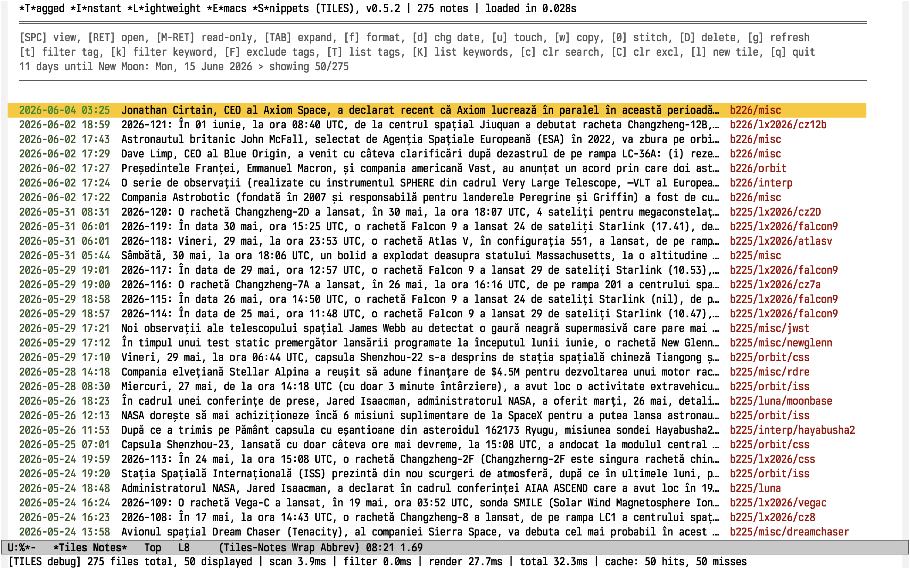
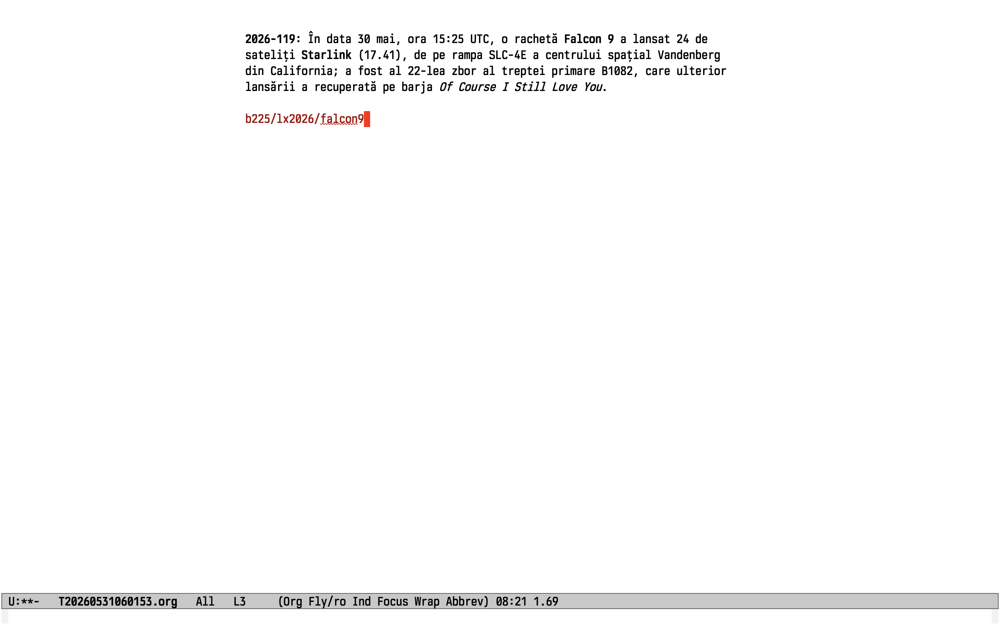
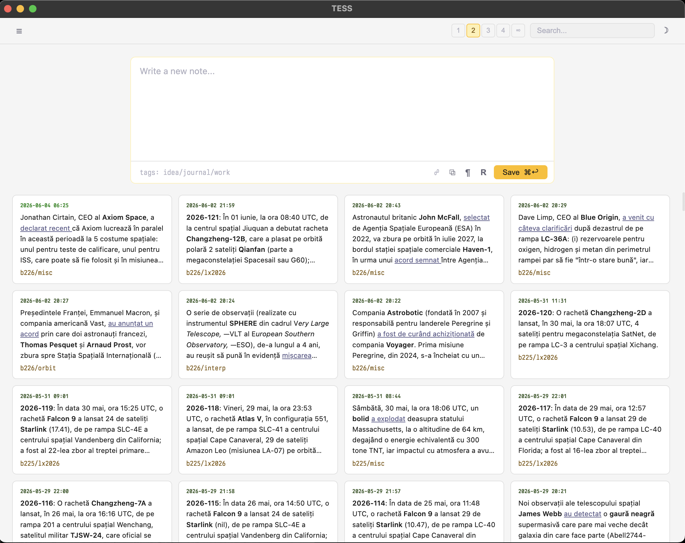

Plain-text note-taking for Emacs & desktop
Every note is a file. Ideally, just one paragraph.
Just paragraphs and tags.
And maybe keywords, if you want.
Core Concept
Most note-taking systems ask you to file things. Before you can write a note, you need to decide what it belongs to: which notebook, which folder, which page, which parent node. That decision is often wrong, and it costs time you did not have when the thought arrived.
TILES and TESS ask you to make no such decision. Each note is a single paragraph — one idea, one observation, one moment of thinking — stored as its own .org file. The filename is a timestamp. The last line is a list of tags. Any bold word in the text becomes a searchable keyword. That is the complete system.
You retrieve notes by what they are about, not by where you put them. Tags give you broad categories. Keywords give you fine-grained content retrieval. A note about the economics of rocket reusability sits in no folder; it is found by searching launch costs or filtering by aerospace.
"You do not need to decide where a note belongs before you can write it."
The vault is a directory of plain files. Sync it with any tool. Version it with git. Open it in Finder, grep through it in the terminal, edit a file in any text editor. Nothing breaks. Nothing needs to be migrated.
Note Format
A tile is a plain .org file. The name encodes when it was written. The structure has three parts: content, an optional blank line, and a tag line.
The bold phrases — *Falcon 9*, *launch costs*, *expendable rockets* — are extracted as searchable keywords. Hyphens in bold phrases normalize to spaces at match time, so *Falcon-9* and *Falcon 9* are the same keyword. The note itself is never modified by this process.
Lines beginning with && are private paragraphs: present in the file, stripped from all previews, search panels, stitched views, and exports. Useful for source notes, personal context, or reminders you do not want surfaced in results.
The tag line is always the last non-empty line, slash-separated. Tags are free-form strings — there is no tag registry, no hierarchy, no required structure.
TILES — Emacs Package
Tagged Instant Lightweight Emacs Snippets
TILES is a single-file Emacs Lisp package (tiles.el). No build system, no external dependencies beyond Emacs itself and the built-in org, lunar, and filenotify libraries. Install it by loading the file; evaluate the buffer to test changes.
Notes are stored in ~/notes/tiles/ by default and loaded recursively, so you can arrange files in subdirectories freely — or let them all sit flat. Year-based subfolders are opt-in (tiles-year-subfolders).
The dashboard (C-c m m) lists all notes newest-first. Timestamps are color-coded by age: today in green, recent in muted green, older in gray. Each line shows a one-line preview stripped of org markup. The header shows a moon phase countdown (days to next new or full moon) and any active filter state.
| Key | Action |
|---|---|
| n / p | Next / previous note |
| SPC | Open preview split; updates automatically as you navigate |
| RET | Open note for editing |
| M-RET | Open read-only; m appends similar notes inline |
| TAB | Expand: show private paragraphs, keywords, file stats |
| t / k | Filter by tag / keyword |
| F | Exclude notes with a given tag |
| T / K | Browse all tags / keywords with counts |
| 0 | Stitch displayed notes into a single org buffer |
| l | New note (opens in focus mode) |
| w / W | Copy note to clipboard — w preserves org markup; W strips it to plain text |
| u | Touch — rename file to current timestamp |
| d / D | Rename date / Delete note |
| g | Refresh dashboard (preserves selection) |

New notes open in a capture minor mode over org-mode. Write freely; C-c C-c saves, C-c C-k cancels. The file is named from the current timestamp. Focus mode centers the buffer at ~80 characters with soft word-wrap.
For notes you want to record without breaking flow: C-c m q prompts in the minibuffer, C-c m y pre-fills content from the clipboard. Both bypass the full buffer entirely.

Tag and keyword search both operate against a persistent reverse index built at startup — O(matching files), not a linear scan. The query grammar is compact:
Results open in a two-panel view — navigable file list on top, live org preview below. SPC switches to a stitched view: all matching note contents concatenated in a single scrollable org buffer, tag lines and private paragraphs removed.
From any note open read-only (M-RET from the dashboard), pressing m appends the top-5 most similar notes inline. Similarity is TF-IDF over content tokens; bold keywords in the target note receive a 3× weight boost. Pressing m again hides the block.
T and K in the dashboard open browsable lists of all tags or keywords with occurrence counts. Both support sorting by alphabet or frequency. R renames the tag or keyword under point across all matching files in the vault.
TESS — Electron Companion
Temporal Entry Stitch SystemYou don't use Emacs? Maybe you find it intimidating, or you're one of those people that uses the other editor? TESS is a small, fast Electron desktop application for the same vault format. It is not a port of TILES — it is a different entry point to the same files, designed for when you want a native window rather than an editor extension.

Open your vault in TESS in the morning. Capture notes in TILES during an Emacs session in the afternoon. Sync the vault with rsync or git in between. The vault is indifferent to which tool last touched it.
TESS recognizes the same && private-paragraph convention, the same slash-delimited tag line, and the same *bold* keyword extraction. It additionally supports .md and .txt extensions alongside .org. Fonts can be loaded from a local fonts/ directory or from system-installed fonts, switchable in Settings.
TESS ships source only — no prebuilt binaries in the repository. Build locally:
On first run, use File → Open Vault… to point TESS at your tiles directory.
Interoperability
The on-disk format is the contract. Both tools implement it identically; everything else is a difference of environment and interface.
| TILES | TESS | |
|---|---|---|
| Platform | Emacs (any OS) | Electron — macOS, Windows |
| Vault format | T<timestamp>.org | T<timestamp>.org | .md | .txt |
| Tag line | last non-empty line, /‑separated | same |
| Keywords | *bold* words extracted on parse | same |
| Private lines | && prefix — stripped at display | same |
| Live sync | file-notify watches on vault dirs | — |
| Persistent cache | ~/.emacs.d/tiles-cache.el | — |
| Similar / related notes | TF-IDF, keyword-boosted | ✓ |
| Org dynamic blocks | tiles-notes, tiles-files | — |
| License | GPL-3.0 | GPL-3.0 |
Why plain text
Graph-based and wiki-style systems solve a real problem — the feeling that notes are disconnected — by building a layer of metadata on top of the text. Backlinks, embedded queries, block references, hierarchical namespaces: each feature is infrastructure that your knowledge depends on to stay coherent. When the infrastructure changes, the knowledge has to migrate with it.
TILES and TESS make a different bet. The problem is not that notes are disconnected. The problem is that retrieval is hard. Tags and keywords solve retrieval. They do not require notes to reference each other. They do not break when a note is renamed. They do not produce a graph that needs to be maintained. They leave the files fully readable in any text editor, forever.
"A plain-text file from 2004 opens perfectly today. The same cannot be said for any application's proprietary format."
The vault is a directory. Back it up however you back up files. Version it with git. Grep through it in the terminal. Copy it between machines. It does not require a running server, a sync daemon, a browser tab, or a paid account to stay accessible.
The tools that read the vault today — TILES, TESS, any editor, any future tool — are interchangeable at the file boundary. The knowledge outlives the software.